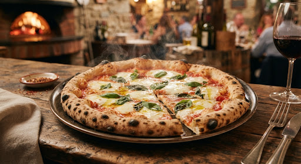
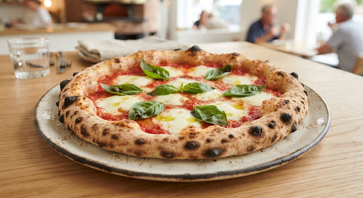
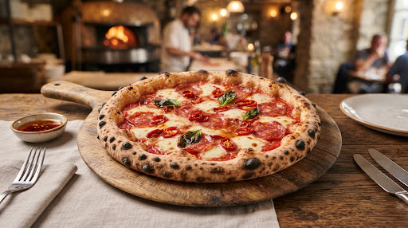

Classique DOP
Margherita di Bufala DOP
24 DTSauce tomate San Marzano, mozzarella di bufala Campana, basilic frais, huile d'olive extra vierge.
♧ VégétarienCommander →
Découvrez l'authenticité de la véritable pizza napolitaine cuite au feu de bois avec des ingrédients d'exception importés directement d'Italie et du terroir méditerranéen.

Une sélection de nos créations phares préparées avec passion par nos maîtres pizzaiolos selon les règles séculaires de Naples.
Sauce tomate San Marzano, mozzarella di bufala Campana, basilic frais, huile d'olive extra vierge.

Signature du ChefCrème de truffe noire, fio di latte, champignons sautés, copeaux de parmesan 24 mois.

PiccanteSauce tomate San Marzano, spianata calabrese piquante, fior di latte, piments doux.
« La semplicità è la massima raffinatezza. »
(La simplicité est la sophistication suprême)
Chez La Piazza, chaque pizza raconte l'histoire de notre terre napolitaine. Une fermentation patiente de 72 heures, une braise vive de chêne et la passion de partager notre table avec vous.